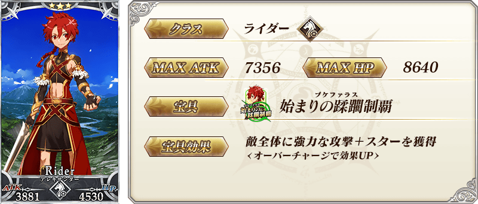

◆「艾梅洛閣下II世事件簿合作活動開幕前夕Pick Up召喚」期間◆
期間:2019年4月22日(一) 17:00～5月6日(一) 11:59
舉辦期間限定「艾梅洛閣下II世事件簿合作活動開幕前夕Pick Up召喚」！ ※未通過第2部 第3章「Lostbelt No.3 － intro －」的狀態也能進行「艾梅洛閣下II世事件簿合作活動開幕前夕Pick Up召喚」。
本次從「艾梅洛閣下II世事件簿」關聯從者之中，「★5(SSR)諸葛孔明〔艾梅洛Ⅱ世〕」Pick Up！
並且，進行動作翻新的「★3(R)亞歷山大」也Pick Up！
詳情請在聖晶石召喚畫面左下的召喚詳細確認。
◆有關從者的注意◆
※諸葛孔明〔艾梅洛Ⅱ世〕、亞歷山大在Pick Up期間結束後仍會在故事召喚被抽出。
Pick Up期間中，Pick Up從者的出現機率提升！
10次召喚中確定1張★4(SR)以上和確定1位★3(R)以上的從者！ ※確定★4(SR)以上包含從者和概念禮裝。 ※本頁面皆為開發中圖片。會有與實際圖片相異的情況。

 ※上述「★3(R)亞歷山大」的卡面為靈基再臨第2階段。

翻新「★3(R)亞歷山大」的戰鬥動作及寶具演出！
在「Fate/Grand Order」官方網站內的公告中，以影片公開寶具演出，敬請確認。
◆翻新時間◆
2019年4月22日(一) 17:00～

介紹「★5(SSR)諸葛孔明〔艾梅洛Ⅱ世〕」的寶具演出！
在「Fate/Grand Order」官方網站內的公告中，以影片公開寶具演出，敬請確認。
其他還有，「艾梅洛閣下II世事件簿×Fate/Grand Order合作活動開幕前夕宣傳活動」同時舉辦！
關於詳情，請自下述橫幅確認。